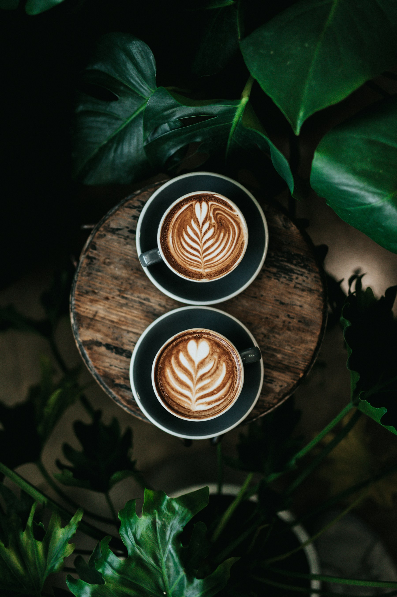
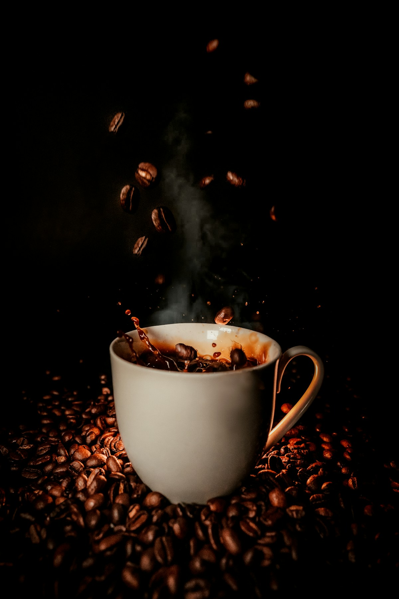

THE EVERYDAY
FAVOURITE
FAVOURITE
The Daily
Chocolate. Hazelnut. Happy place.
Your reliable plus-one. Round and mellow, with a sweet finish that makes the next sip inevitable.
FOR EARLY BIRDS & NOT-SO-EARLY BIRDS.
Big flavour. Little rituals.
Your everyday cup, with a little more character.
A FRESH TAKE ON YOUR DAILY GRIND.

A SMALL RITUAL. A WHOLE DIFFERENT DAY.
LET IT UNFOLD

GO ON. MAKE A MOMENT OF IT.
Find your daily thingYOUR CUP. YOUR CALL.
No coffee dictionary required.
Tell us what you like. We'll take it from here.
Try our demo coffee finder. Every blend is fictional.
MILK CHOCOLATE · HAZELNUT · CARAMEL
A round, chocolatey cup that feels right at home in your espresso or moka pot. Especially good with a splash of milk.
SOMETHING FOR YOUR EVERYDAY.
3 coffees to get to know
Chocolate. Hazelnut. Happy place.
Your reliable plus-one. Round and mellow, with a sweet finish that makes the next sip inevitable.
Berries. Citrus. A fresh perspective.
For curious cups. A lively, fruit-forward character that brings a little sunshine to your brewing ritual.
Cocoa. Biscuit. Take your time.
The laid-back one. A cosy, gently sweet decaf for the kind of coffee break that isn't in a hurry.
A LITTLE LIST OF GOOD THINGS.
Just for exploring. No order, checkout or personal details.
NO SECRET HANDSHAKE REQUIRED.
That's the idea behind DAYBREAK. A fictional independent coffee brand built around better everyday moments, a little curiosity, and finding what tastes good to you.
Find your daily thing